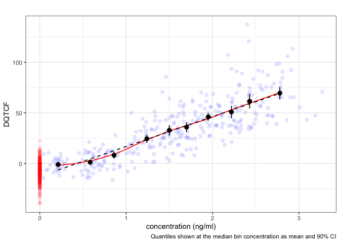

This package provides functions to streamline concentration-QTc analysis of clinical ECG data.
Installation
You can install the development version of cqtc like so:
devtools::install_github("rstrotmann/cqtc")Example
The basic building block for further analyses is the cqtc() data object. The package includes data for dofetilide and verapamil copied from
Parkinson, J., Dota, C. & Rekić, D. Practical guide to concentration-QTc modeling: a hands-on tutorial. J Pharmacokinet Pharmacodyn 52, 43 (2025). https://doi.org/10.1007/s10928-025-09981-8.
The following is a basic example which shows you how to create an exploratory c-QTc plot for the dofetilide data set. For further analysis, including linear mixed effects modeling, see vignette("cqtc").
library(cqtc)
library(nif)
#>
#> Attaching package: 'nif'
#> The following objects are masked from 'package:cqtc':
#>
#> add_ntile, subjects
library(dplyr)
#>
#> Attaching package: 'dplyr'
#> The following objects are masked from 'package:stats':
#>
#> filter, lag
#> The following objects are masked from 'package:base':
#>
#> intersect, setdiff, setequal, union
dof <- dofetilide_cqtc %>%
cqtc_add_baseline("QTCF", baseline_filter = "NTIME == -0.5") %>%
add_bl_popmean("BL_QTCF") %>%
mutate(DPM_BL_QTCF = BL_QTCF - PM_BL_QTCF) %>%
derive_group_delta("DQTCF") %>%
mutate(NTIME = as.factor(NTIME))
cqtc_ntile_plot(dof, lm = TRUE, loess = TRUE)